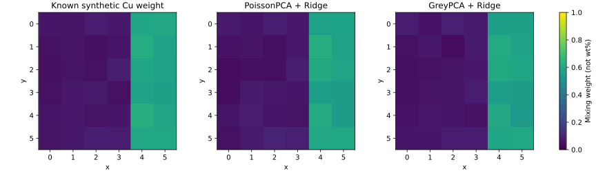

SYNTHETIC DEMO · 合成資料 · 非真實量測／鑑識證據
合成 XRF 光譜：Grey/PCA 示範
4 張獨立模擬的 6×6 掃描圖，共 144 組光譜；前三張訓練、最後一張測試。
已知目標與預測

| 方法 | 獨立模擬圖 MAE |
|---|
| PoissonPCA + Ridge | 0.00861 |
| GreyPCA(PoissonPCA) + Ridge | 0.01256 |
| Training-mean baseline | 0.23394 |
怎麼解讀
混合權重只控制模擬譜線強度，不是儀器量測的元素重量百分比。Bruker 公開列有 EMSA 匯入功能，但這批檔案尚未在你的 M4／ESPRIT 版本上實測。SPX 僅驗證本專案讀回，沒有使用任何外部儀器測試資料。